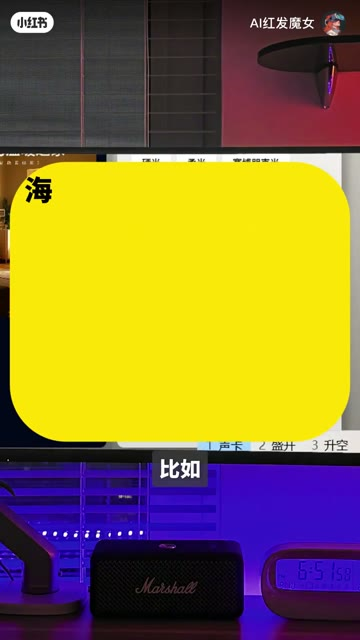
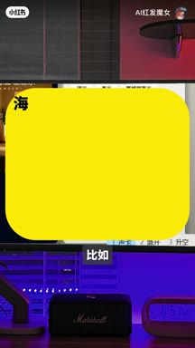
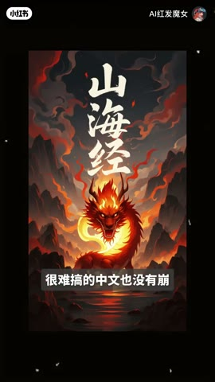
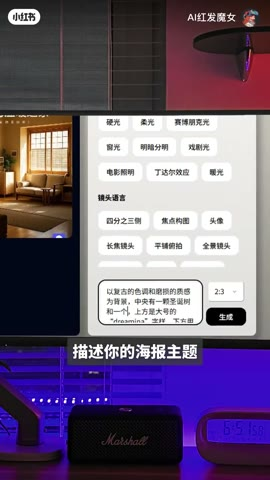

01钩子 / 问题
先展示四类成品和中文排版
开场展示电影、活动、节日海报和菜单，强调每张图生成不到十秒，并用创意、审美、字体、排版和中文没有崩坏来证明结果质量。
描述主题和视觉结构后，AI 可以快速生成中文海报，并继续修改、高清化、加 Logo 或复用模板。
内容结构实际上非常接近高赞任务解法：结果先行、步骤清楚、收藏率也高。但 27 赞和 40 藏说明它更像‘小范围看见后愿意保存’，不能直接解释为内容无用。
描述主题和视觉结构后，AI 可以快速生成中文海报，并继续修改、高清化、加 Logo 或复用模板。
不是复述内容，而是标出每一段承担的叙事任务、观众问题和画面证据。
开场展示电影、活动、节日海报和菜单，强调每张图生成不到十秒，并用创意、审美、字体、排版和中文没有崩坏来证明结果质量。
教程进入 Coze 的营销海报生成能力，要求填写海报主题，并按给定结构组织提示词；示例是一张特定风格的圣诞海报。
生成结果不满意时可以继续提出修改，还能高清化、加入品牌 Logo、复制预设模板并自行调整。
结尾判断该工具足以应付多数基础设计场景，并用基础设计师危险制造讨论，最后把入口放到评论区。
下列章节覆盖视频的主要论点、步骤与结果；每段都保留时间码和关键画面。
开场展示电影、活动、节日海报和菜单，强调每张图生成不到十秒，并用创意、审美、字体、排版和中文没有崩坏来证明结果质量。

教程进入 Coze 的营销海报生成能力，要求填写海报主题，并按给定结构组织提示词；示例是一张特定风格的圣诞海报。
生成结果不满意时可以继续提出修改，还能高清化、加入品牌 Logo、复制预设模板并自行调整。
结尾判断该工具足以应付多数基础设计场景，并用基础设计师危险制造讨论，最后把入口放到评论区。
短视频每 1 秒、常规视频每 2 秒、超长视频每 3 秒取一帧。

Whisper base 机器转写草稿 · 25 段 · 316 字。字幕只记录声音；工具名、界面文字和结果含义必须结合上方视觉知识地图复核。
没设计试天塌了
这几张电影海报活动海报节日海报和菜单都是我用了i设计的
每张图只用了不到10秒
A看这图片的创意审美自体和排版真的高级到过于离谱

很难搞的中文也没有崩
今天就叫大家做这样的海报超级简单
而且还免费
我们来到coz找到营销海报声称

在这里写着与描述你的海报主题
终于结构可以按照这个来写
A比如我要做一张笔目风格的圣诞海报提示词就是这样
你们可以直接复制A不到10秒
真的不到10秒
一张高质量海报就做好了
如果不满意
还可以在这里继续提修改一件
或者让它变高轻
还可以一件加自己的品牌logo
还可以一件复制预设的海报模板自己修改定义
甚至自己开发AI应用
真的
这个AI应付大部分基础设计的场景完全够了
同时那些基础设计师真的危险了
就与我放评论区了
朋友们自取
官方字幕不可用，本页文字稿来自 Whisper base 机器转写，Coze、Recraft 和设计术语可能有错。公开视频无法判断曝光规模、封面点击或发布时间竞争。
打开小红书原帖 ↗